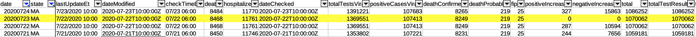
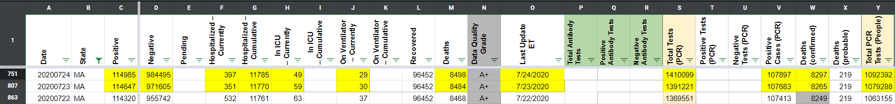
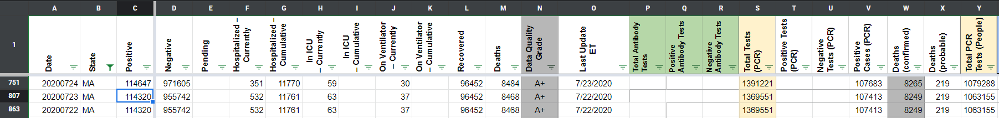

[MA] Missed 7/23 Update
Issue number 673
andrewghaly opened this issue on July 25, 2020 at 7:45 am
Labels Historical Data Backfill Missing Data
Data is missing for 7/23. Will require backfill as well
https://www.mass.gov/doc/covid-19-dashboard-july-23-2020/download - July 23 data

andrewghaly added the label Data quality on July 25, 2020 at 7:45 am
brianskli removed the label Data quality on July 27, 2020 at 9:34 am
brianskli added the label Backfill on July 27, 2020 at 9:34 am
brianskli added the label Historical Data on July 27, 2020 at 9:34 am
brianskli added the label Missing Data on July 27, 2020 at 9:34 am
the-daniel-lin commented on August 7, 2020 at 10:52 am
AFTER: 
the-daniel-lin closed the issue on August 7, 2020 at 10:52 am
MA updated their website after our publication shift on 7/23 which resulted in the missed update. On 7/24, MA updated late again, and we used the 7/23 dashboard to fill in numbers on 7/24. Filling in the numbers with their proper dates now:
7/23 dashboard: https://www.mass.gov/doc/covid-19-dashboard-july-23-2020/download 7/24 dashboard: https://www.mass.gov/doc/covid-19-dashboard-july-24-2020/download
BEFORE: 